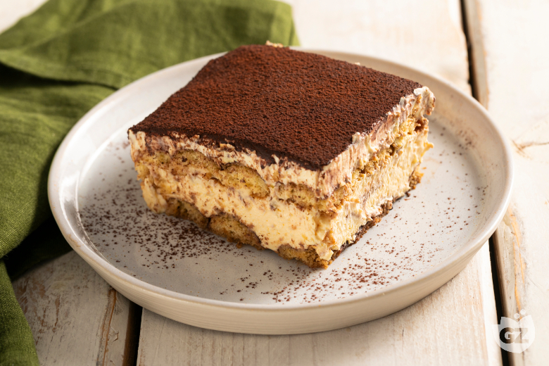

Home
Tiramisu

The best of the best from the italian dessert scene, simple, delicious and extremely creamy, an easy and fast recipe all the family will love
Ingredients
- Eggs
- Mascarpone cheese
- Savoiardi biscuits
- Black coffee
- Sugar
Steps
- You need to open the eggs and divide the yolk from the albumen and keep them.
- You need to add half of the sugar to your yolk and mix it until it whitens.
- You then add the mascarpone cheese to it and mix it again until its a smooth cream.
- You should now mix the albumen and the other half of the sugar until stiff peaks form.
- Now you GENTLY add the albumen to the mascarpone cream little by little and for each add you mix.
- You now have your cream, prepare a tray or somewhere you want to conserve your tiramisu and place a thin very thin layer of mascarpone cream.
- Take the savoiardi and soak them into the black coffee note: the biscuits should not be too soaked or they will have bad consistency or straight up break in your hands and add them to the tray.
- Now add a layer with around 1/3 of the cream you have left and place another layer of savoiardi on top.
- Finally you add the last layer of cream that should be 2/3 left from the last step and you let the tiramisu rest in the fridge for 24 hours.
- You made it, now you and your family can Enjoy this fantastic recipe!